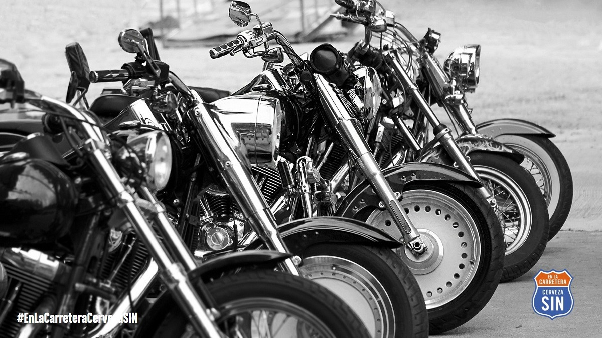
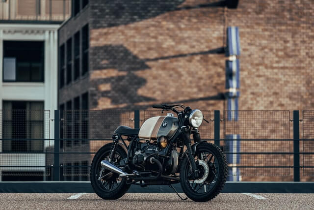
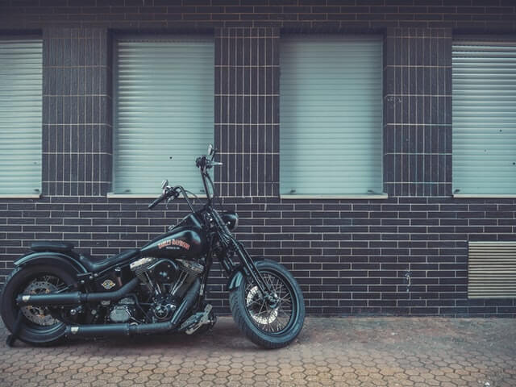
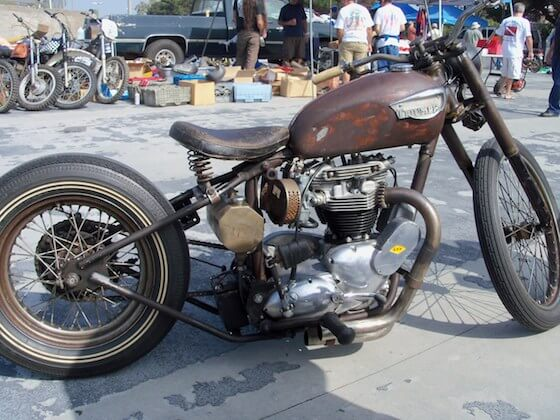
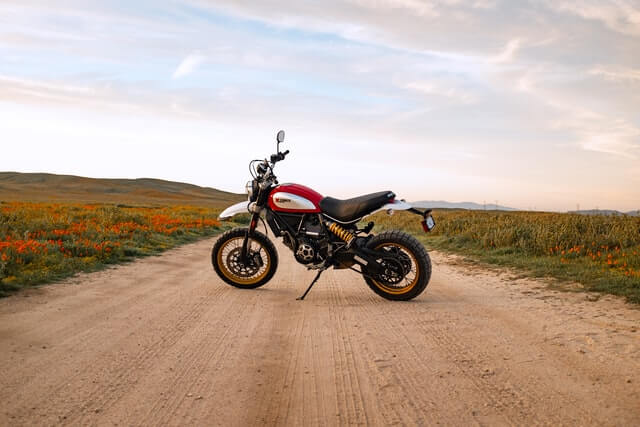
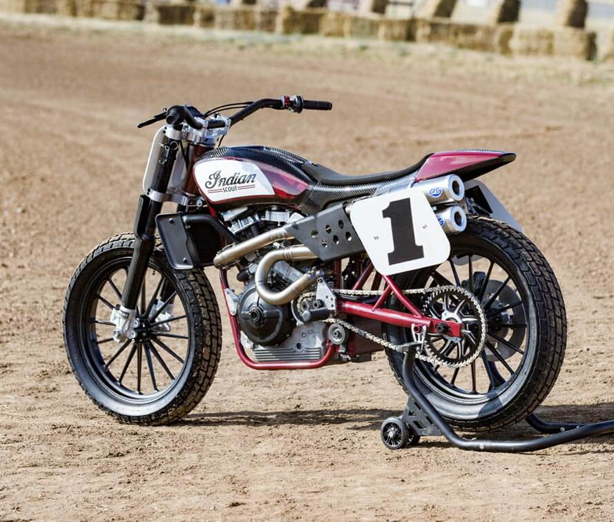

Las Mejores Motos custom.
Marcas de motos que cuentan con modelos Custom
Hoy en día, sigue habiendo una gran cantidad de aficionados de este tipo de motos y es por eso por lo que la mayoría de las marcas cuentan con una línea Custom. La marca por excelencia es la empresa estadounidense Harley Davidson. Otra de las marcas más reconocidas es su eterna rival, la Indian. A parte de esas que se especializan en ese tipo de motos, las marcas más típicas y vendidas en la actualidad también tienen sus modelos Custom. Por ejemplo, empresas como Kawasaki, Honda o Suzuki cuentan con una línea Custom. Actualmente están apareciendo marcas nuevas que su especialidad son las motos más retros y cuentan con una línea de moto Custom. Estas marcas son: Leonart, Macbor, MITT, Keeway, Hyosung y más.
Este tipo de moto aparecieron sobre la década de los 40. El rasgo más característico de estas motos es que son largas y bajas al mismo tiempo. Sus ruedas tienen el mismo grosor y diámetro tanto la delantera como la trasera. Los radios de sus ruedas son clásicos y sus neumáticos era habitual que tuviesen una banda blanca. Las piezas prescindibles de carrocería eran quitadas, como por ejemplo el guardabarros delantero. Y por último añadir que tenían un asiento de muelles monoplaza, pintura mate y su manillar era alto y ancho.
Las motos Cafe Racer surgieron en los años 50 en Reino Unido. Estas motos destacan por sus pequeños y pocos carenados para conseguir reducir el peso, su semimanillar y su asiento monoplaza con un colín pequeño, ya que su propósito era conseguir la mayor eficiencia y velocidad posible con la moto
Las motos Chopper se comenzaron a hacer populares en EEUU en los años 60 con unos diseños que llamaban mucho la atención. Son conocidas por su tan característica horquilla alargada, su pronunciada inclinación, su manillar tan alto que se le llama “cuelgamanos” y su largo chasis. También es muy característico de este tipo de moto su llanta delantera más grande que la trasera pero a su vez algo más estrecha.
Las motos Rat Style surgieron en EEUU. Son muy peculiares, ya que son motos con las que se intenta buscar un aspecto o apariencia totalmente viejo y descuidado, pero realmente todas las piezas y la parte más mecánica de la moto como tal, se mantienen en un estado impecable e incluso en ocasiones son piezas mejores a las de serie.
Las motos Scrambler surgieron después de la I Guerra Mundial en Inglaterra, ya que la gente necesitaba un vehículo para poder transportarse tanto por carretera como fuera de carretera. Su suspensión es mayor y con un mayor recorrido que las motos de carretera y sus neumáticos son tacados para poder conducir por caminos de tierra y de montaña y que pueda afrontar los baches y saltos sin problemas. Además cuentan con un manillar algo más ancho que las motos de carreteras para ser más cómodas a la hora de manejarlas. Por último, algunos rasgos característicos son su escape elevado para no recibir golpes y su asiento largo y plano para tener mucha superficie para conseguir una mayor comodidad en caso de ir por caminos de fuera de carretera.
Las motos Street Tracker consisten en parecerse a las motos que se utilizan en las carreras de Dirt Track y Flat Track que hacen en América. La parte delantera siempre es muy limpia, no cuentan con guardabarros y tienen una placa con un número donde muchas veces se instalaba el faro. El manillar de las motos Street Tracker son muy anchos, cuentan con un colín muy pequeño y plano, el depósito es bastante alargado y suelen incluir también una placa con números en el lateral ..